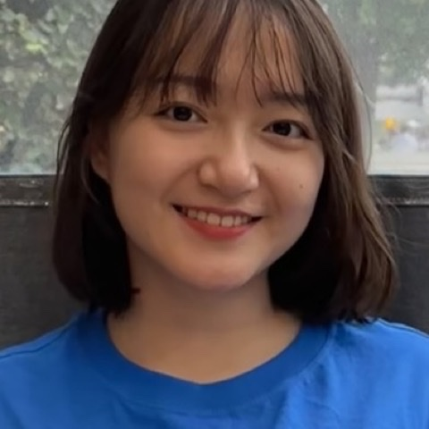
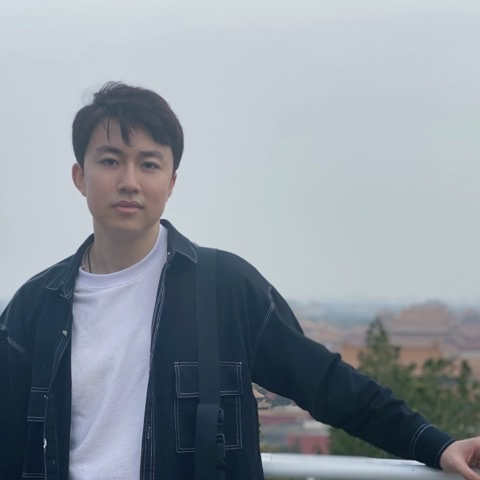
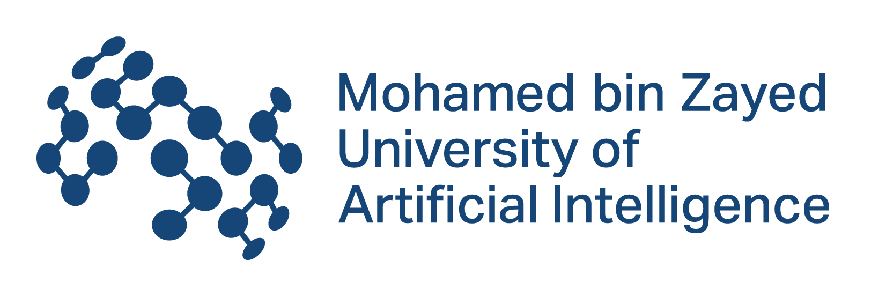

Non-Autoregressive Language Models for Fast & Flexible Text Generation
A workshop on language generation beyond next-token prediction — spanning diffusion, flow matching, and any-order autoregression.
Dates are tentative and follow the suggested COLM 2026 workshop timeline.
Announcements
- Workshop website is live. Call for papers details are posted below; the OpenReview submission portal will be linked here once it opens.
- NonAR-LM is confirmed as an official workshop at COLM 2026 in San Francisco.
Language generation beyond next-token prediction
Autoregressive next-token prediction has long been the dominant paradigm for language modeling, thanks to its simplicity, scalability, and strong empirical performance. Yet the left-to-right factorization imposes constraints that limit efficiency, controllability, and global coherence.
Recent advances in non-autoregressive modeling offer a fundamentally different approach to discrete sequence generation. Instead of committing to a fixed left-to-right order, these models enable parallel decoding, generate tokens in any order, and can revise earlier decisions. They span masked and uniform-state diffusion, discrete flow matching, and any-order autoregression, and are now competitive at scale and increasingly deployed in industry systems. This workshop brings the community together around three core challenges:
Sequential decoding bottleneck
Tokens are generated one at a time, preventing parallelism across the sequence and leaving hardware underutilized.
Limited controllability
Conditioning on global constraints or future tokens is indirect, often needing complex prompting, rejection sampling, or constrained decoding.
Limited global consistency
Local, token-level decisions can drift into incoherence over long horizons, since the model cannot revise earlier outputs.
Call for contributed work
We invite contributions on training and/or inference of non-autoregressive language models — including diffusion, flow matching, and any-order autoregression.
Modeling & Training
New model classes and training objectives — discrete diffusion, uniform-state diffusion, flow-based, and any-order approaches.
Inference & Sampling
Inference-time algorithms: iterative refinement, parallel decoding, controllable and constrained generation, planning and correction.
Evaluation & Efficiency
Evaluation beyond left-to-right likelihood, plus parallel generation, latency-constrained inference, and systems for scaling.
Applications
Applications across language, code, and biological sequences — including comparative studies of when iterative models help.
Submit your work
Submissions may present new results, works in progress, negative results, empirical evaluations, or forward-looking position papers relevant to the workshop themes.
- 2–4 page extended abstracts, excluding references and an optional appendix.
- Non-archival. Submitting does not preclude publishing elsewhere.
- Double-blind review. Each submission receives at least three reviews.
- Six spotlight (contributed) talks selected from submissions; all accepted work is presented as posters.
- Submissions due June 23, 2026; notifications by July 24, 2026 (tentative).
- Conflicts of interest handled per COLM policy; conflicted organizers and reviewers are recused.
Tentative schedule
A full day of 6 invited talks, 6 contributed spotlight talks, 2 poster sessions, and a panel discussion (times in Pacific Time).
Schedule is tentative; talk-to-slot assignments will be finalized closer to the event.
The future of language generation
Our panel examines when iterative discrete generation offers qualitatively different capabilities from standard autoregressive modeling, and what technical barriers remain in scaling, controllability, inference-time computation, and evaluation — bringing together complementary viewpoints from academia and industry.
Moderated by Fred Peng · Duke University
Junior Organizers

Senior Organizers

Expected sponsors


Sponsorship is anticipated and pending confirmation. Support will prioritize travel grants for junior and underrepresented researchers.
Inclusion & travel support
A key priority is to reflect the diverse viewpoints of the whole community. Our speakers, panelists, and organizers span career stages, institution types, and geographies across North America, Europe, the Middle East, and Asia, bridging academia and industry.
We support broad participation through an open, non-archival call, poster presentations for all accepted papers, and spotlight talks for selected submissions. Subject to sponsorship, we will offer travel support prioritizing junior researchers, researchers from underrepresented groups, and participants who would otherwise face barriers to attending.